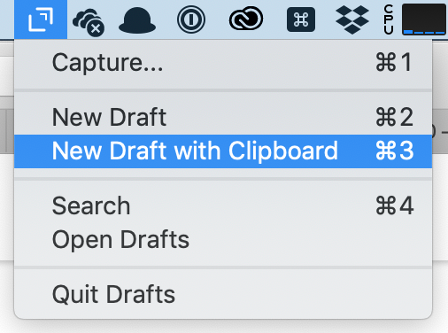

I’m not finding an easy way to export from Apple Notes to Drafts – and when I invoke the share menu in Apple Notes for Mac OS, Drafts doesn’t appear as a possible destination — not even with straight text notes.
Any ideas?
I’m not finding an easy way to export from Apple Notes to Drafts – and when I invoke the share menu in Apple Notes for Mac OS, Drafts doesn’t appear as a possible destination — not even with straight text notes.
Any ideas?
Oops, I didn’t read carefully, my answer was for iOS.
I’d be interested in that as well.
I am not seeing drafts in the share menu either even though it is checked in MacOS.
But, with the Drafts menu toolbar helper, you can first copy the text in notes and then select “New drafts from clipboard” option.

Copy and paste
Notes formats things, drafts does not. Notes can have pictures, drafts cannot.
Copy and paste because there is no automatic way for a piece of software to know what you want done with the formatting, tables, fonts and pictures.
And notes uses folders and drafts uses tags so there needs to be a translation between those two systems.
My suggestion is that you use the Apple Notes Exporter App. It worked quite well for me. Exporter for Notes.app - Export or Backup Notes from Apple's OSX Notes app to Plain Text .txt
{kind=link}